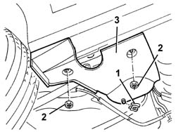

7055A30 l/h or r/h side rubbing strip (one) - r+r
- Path
- Procedures > 70 FITTINGS > 7055 MOULDING AND PROTECTION > 7055A exterior mouldings > 7055A30 l/h or r/h side rubbing strip (one) - r+r
- Kind
- repair procedure (removal / refitting; the operation number is the code)
- Applies to
- all engines; all production periods
- Interactive page
- https://sloeber94.github.io/elrnDB-a147/en/#/3025896
Applies to: all engines; all production periods
 Removing
Removing
 Refitting
RefittingRaise the vehicle in the area concerned.
1. Remove the retaining clip.
2. Unscrew the nuts.
3. Remove the side skirt.

Applies to: all engines; all production periods
Refitting
RemovingCheck that the side skirt is undamaged.
Refit the side skirt and secure with nuts.
Fit the retaining spring.
Lower the vehicle.